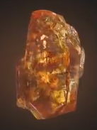
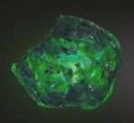
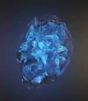
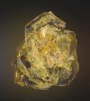
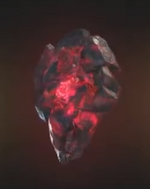
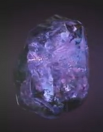

| Soul |
Orange |
The orange stone that represents Coral promotes strength, wisdom, intellect, power, courage, determination and enthusiasm. |
 |
| Time |
Green |
The green stone representing Emerald ensures better earning opportunities and a steady and positive in-flow of wealth. It promotes career growth, ensures societal recognition, and yields spiritual benefits. |
 |
| Space |
Blue |
The majestic blue Sapphire possesses the power to make and break an individual’s life. Wearing this stone can help the bearer have a calmer and sharper mind, and ensures people take up tasks in a proper manner. |
 |
| Mind |
Yellow |
The yellow stone, known as the magnificent Sapphire in all its hues, is associated with wisdom, wealth, sound health and prosperity. |
 |
| Reality |
Red |
The red gem, also known as Ruby, improves the real power of concentration. |
 |
| Power |
Purple |
The purple-coloured gem, Amethyst, helps to overcome fears. |
 |